推荐算法之从FM到DeepFM¶
推荐与ctr
一、潜在因子（Latent Factor）算法¶
这种算法是在NetFlix（没错，就是用大数据捧火《纸牌屋》的那家公司）的推荐算法竞赛中获奖的算法，最早被应用于电影推荐中。 下面仅利用基础的矩阵知识来介绍下这种算法。
这种算法的思想是这样：每个用户（user）都有自己的偏好，比如A喜欢带有小清新的、吉他伴奏的、王菲等元素（latent factor）， 如果一首歌（item）带有这些元素，那么就将这首歌推荐给该用户，也就是用元素去连接用户和音乐。每个人对不同的元素偏好不同， 而每首歌包含的元素也不一样。我们希望能找到这样两个矩阵：
一.用户-潜在因子矩阵 \(Q\) ，
表示不同的用户对于不用元素的偏好程度，1代表很喜欢，0代表不喜欢。比如这样：
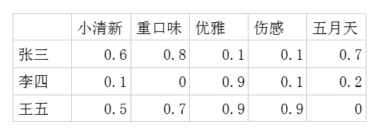二.潜在因子-音乐矩阵 \(P\)
表示每种音乐含有各种元素的成分，比如下表中，音乐A是一个偏小清新的音乐，含有小清新这个Latent Factor的成分是0.9， 重口味的成分是0.1，优雅的成分是0.2……
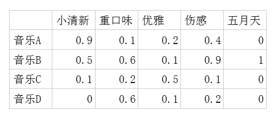
- 利用这两个矩阵，我们能得出张三对音乐A的喜欢程度是：
张三对小清新的偏好*音乐A含有小清新的成分+对重口味的偏好*音乐A含有重口味的成分+对优雅的偏好*音乐A含有优雅的成分+……
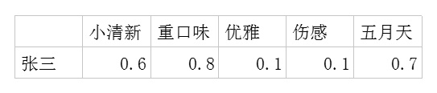
即：0.6*0.9+0.8*0.1+0.1*0.2+0.1*0.4+0.7*0=0.69
每个用户对每首歌都这样计算可以得到不同用户对不同歌曲的评分矩阵 \(\tilde{R}\) 。（注，这里的破浪线表示的是估计的评分，不带波浪线的 \(R\) 表示实际的评分）：
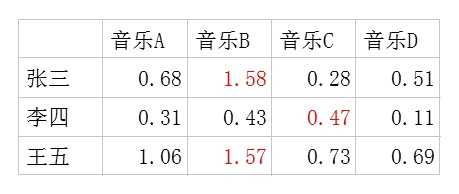
因此我们对张三推荐四首歌中得分最高的B，对李四推荐得分最高的C，王五推荐B。
如果用矩阵表示即为：
下面问题来了，这个潜在因子（latent factor）是怎么得到的呢？
由于面对海量的让用户自己给音乐分类并告诉我们自己的偏好系数显然是不现实的，事实上我们能获得的数据只有用户行为数据。
首先进行量化：单曲循环=5, 分享=4, 收藏=3, 主动播放=2 , 听完=1, 跳过=-2 , 拉黑=-5，在分析时能获得的实际评分矩阵 \(R\) ，也就是输入矩阵大概是这个样子：
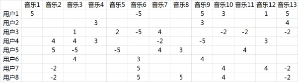
事实上这是个非常非常稀疏的矩阵 ，因为大部分用户只听过全部音乐中很少一部分。如何利用这个矩阵去找潜在因子呢？这里主要应用到的是矩阵的UV分解。 也就是将上面的评分矩阵分解为两个低维度的矩阵，用Q和P两个矩阵的乘积去估计实际的评分矩阵
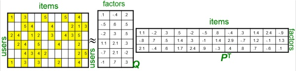
使得评分矩阵 \(\tilde{R}\) 与 实际的评分矩阵越接近越好，也就是求解如下的目标函数：
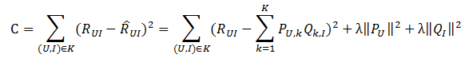
利用梯度下降法就可以求得这 \(P\) , \(Q\) 两个矩阵的估计值 例如我们上面给出的那个例子可以分解成为这样两个矩阵：
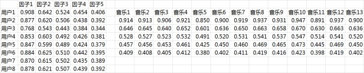
这两个矩阵相乘就可以得到估计的得分矩阵：
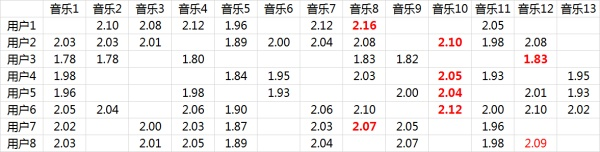
FM（Factorization Machine）¶
由Konstanz大学Steffen Rendle（现任职于Google）于2010年最早提出的，旨在解决稀疏数据下的特征组合问题
下面以一个示例引入FM模型。假设一个广告分类的问题，根据用户和广告位相关的特征，预测用户是否点击了广告。
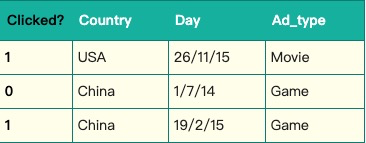
“Clicked?“是label，Country、Day、Ad_type是特征。由于三种特征都是categorical类型的，需要经过独热编码（One-Hot Encoding）转换成数值型特征。
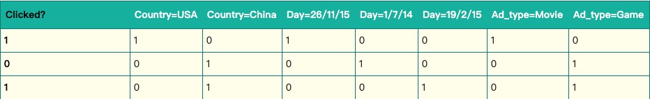
由上表可以看出，经过One-Hot编码之后，大部分样本数据特征是比较稀疏的。上面的样例中，每个样本有7维特征，但平均仅有3维特征具有非零值。 实际上，这种情况并不是此例独有的，在真实应用场景中这种情况普遍存在。例如，CTR/CVR预测时，用户的性别、职业、教育水平、品类偏好， 商品的品类等，经过One-Hot编码转换后都会导致样本数据的稀疏性。特别是商品品类这种类型的特征，如商品的末级品类约有550个， 采用One-Hot编码生成550个数值特征，但每个样本的这550个特征，有且仅有一个是有效的（非零）。由此可见，数据稀疏性是实际问题中不可避免的挑战。
One-Hot编码的另一个特点就是导致特征空间大。例如，商品品类有550维特征，一个categorical特征转换为550维数值特征，特征空间剧增。
同时通过观察大量的样本数据可以发现，某些特征经过关联之后，与label之间的相关性就会提高 。例如，“USA”与“Thanksgiving”、“China”与“Chinese New Year”这样的关联特征， 对用户的点击有着正向的影响。换句话说，来自“China”的用户很可能会在“Chinese New Year”有大量的浏览、购买行为，而在“Thanksgiving”却不会有特别的消费行为。 这种关联特征与label的正向相关性在实际问题中是普遍存在的，如“化妆品”类商品与“女”性，“球类运动配件”的商品与“男”性，“电影票”的商品与“电影”品类偏好等。 因此，引入两个特征的组合是非常有意义的。
**多项式模型**是包含特征组合的最直观的模型。在多项式模型中，特征 \(x_i\) 和 \(x_j\) 的组合采用 \(x_ix_j\) 表示，即 \(x_i\) 和 \(x_j\) 都非零时，组合特征 \(x_ix_j\) 才有意义。 从对比的角度，这里只讨论二阶多项式模型。模型的表达式如下:
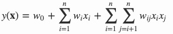
其中，\(n\) 代表样本的特征数量，\(x_i\) 是第 \(i\) 个特征的值，\(w_0\) 、\(w_i\) 、\(w_{ij}\) 是模型参数。
从多项式模型的公司可以看出，组合特征的参数一共有 \(\frac { n(n-1) }{ 2 }\) 个，任意两个参数都是独立的。然而，在数据稀疏性普遍存在的实际应用场景中， 二次项参数的训练是很困难的。其原因是，每个参数 \(w_{ij}\) 的训练需要大量 \(x_i\) 和 \(x_j\) 都非零的样本；由于样本数据本来就比较稀疏， 满足“ \(x_i\) 和 \(x_j\) 都非零”的样本将会非常少。训练样本的不足，很容易导致参数 \(w_{ij}\) 不准确，最终将严重影响模型的性能。
那么，如何解决二次项参数的训练问题呢？ 矩阵分解提供了一种解决思路。一个rating矩阵可以分解为user矩阵和item矩阵，每个user和item都可以采用一个隐向量表示， 比如在下图中的例子中，我们把每个user表示成一个二维向量，同时把每个item表示成一个二维向量，两个向量的点积就是矩阵中user对item的打分。

类似地，所有二次项参数 \(w_{ij}\) 可以组成一个对称阵,那么就可以进行分解,换句话说，每个参数 \({ w }_{ ij }=\left< { v }_{ i },{ v }_{ j } \right>\) ，这就是FM模型的核心思想。因此，FM的模型方程为（暂且不讨论FM的高阶形式）
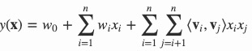
其中，\(v_i\) 是第 \(i\) 维特征的隐向量，\(\left< , \right>\) 代表向量点积。隐向量的长度为 \(k\quad (k<<n)\) ，包含 \(k\) 个描述特征的因子。 根据公式，二次项的参数数量减少为 \(kn\) 个，远少于多项式模型的参数数量。另外，参数因子化使得 \(x_hx_i\) 的参数和 \(x_ix_j\) 的参数不再是相互独立的， 因此我们可以在样本稀疏的情况下相对合理地估计FM的二次项参数。具体来说，\(x_hx_i\) 和 \(x_ix_j\) 的系数分别为 \(\left< { v }_{ h },{ v }_{ j } \right>\) 和 \(\left< { v }_{ i },{ v }_{ j } \right>\) ，它们之间有共同项 \(v_i\)。 也就是说，所有包含“ \(x_i\) 的非零组合特征”（存在某个 \(j≠i\) ，使得 \(x_ix_j≠0\)）的样本都可以用来学习隐向量 \(v_i\) ，这很大程度上避免了数据稀疏性造成的影响。 而在多项式模型中，\(w_{hi}\) 和 \(w_{ij}\) 是相互独立的。
显而易见，公式(2)是一个通用的拟合方程，可以采用不同的损失函数用于解决回归、二元分类等问题，比如可以 采用MSE（Mean Square Error）损失函数来求解回归问题， 也可以采用Hinge/Cross-Entropy损失来求解分类问题。当然，在进行二元分类时，FM的输出需要经过sigmoid变换，这与Logistic回归是一样的。 直观上看，FM的复杂度是 \(O(kn^2)\) 。但是，通过公式(3)的等式，FM的二次项可以化简，其复杂度可以优化到 \(O(kn)\) 。由此可见，FM可以在线性时间对新样本作出预测。
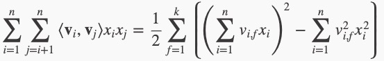
下面给出详细推导：
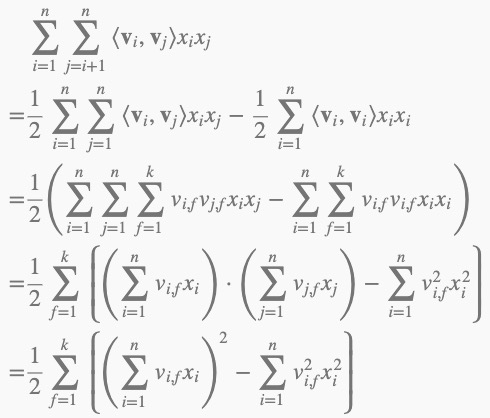
如果用随机梯度下降SGD（Stochastic Gradient Descent）法学习模型参数。那么，模型各个参数的梯度如下：
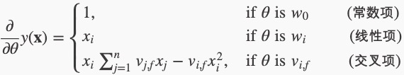
其中， \(v_j\) , \(f\) 是隐向量 \(v_j\) 的第 \(f\) 个元素。
FM训练复杂度
由于 \(\sum _{ j=1 }^{ n }{ { v }_{ j,f }{ x }_{ j } }\) 只与 \(f\) 有关，在参数迭代过程中，只需要计算第一次所有 \(f\) 的 \(\sum _{ j=1 }^{ n }{ { v }_{ j,f }{ x }_{ j } }\) ，就能够方便地得到所有 \(v_{i,f}\) 的梯度。显然， 计算所有 \(f\) 的 \(\sum _{ j=1 }^{ n }{ { v }_{ j,f }{ x }_{ j } }\) 的复杂度是 \(O(kn)\) ；已知 \(\sum _{ j=1 }^{ n }{ { v }_{ j,f }{ x }_{ j } }\) 时，计算每个参数梯度的复杂度是 \(O(n)\) ；得到梯度后，更新每个参数的复杂度是 \(O(1)\) ；模型参数一共有 \(nk+n+1\) 个。 因此，FM参数训练的时间复杂度为 \(O(kn)\)。
注解
1.FM降低了因数据稀疏，导致交叉项参数学习不充分的影响。 每一维特征用 \(k\) 维的隐向量表示，交叉项的参数 \(w_{ij}\) 用对应特征隐向量的内积表示，即 \(\left< { v }_{ i },{ v }_{ j } \right>\) （也可以理解为平滑技术）。这样参数学习由之前学习交叉项参数 \(w_{ij}\) 的过程，转变为学习 \(n\) 个单特征对应 \(k\) 维隐向量的过程。
2.FM提升了模型预估能力 FM可以很方便的计算样本中没有出现的交叉项参数，提升了预估能力
FFM(Field-aware Factorization Machine)¶
FFM是FM的升级模型，通过引入 \(field\) 的概念，FFM把相同性质的特征归于同一个 \(field\) 。以上面的广告分类为例， “Day=26/11/15”、“Day=1/7/14”、“Day=19/2/15”这三个特征都是代表日期的，可以放到同一个 \(field\) 中。 同理，商品的末级品类编码生成了550个特征，这550个特征都是说明商品所属的品类，因此它们也可以放到同一个 \(field\) 中。 简单来说，同一个categorical特征经过One-Hot编码生成的数值特征都可以放到同一个 \(field\) ， 包括用户性别、职业、品类偏好等。在FFM中，每一维特征 \(x_i\) ，针对其它特征的每一种 \(field\) \(f_j\)， 都会学习一个隐向量 \(v_{i,f_j}\) 。因此，隐向量不仅与特征相关，也与 \(field\) 相关。 也就是说，“Day=26/11/15”这个特征与“Country”特征和“Ad_type”特征进行关联的时候使用不同的隐向量， 这与“Country”和“Ad_type”的内在差异相符，也是FFM中“field-aware”的由来。
假设样本的 \(n\) 个特征属于 \(f\) 个 \(field\) ，那么FFM的二次项有 \(nf\) 个隐向量。而在FM模型中，每一维特征的隐向量只有一个，也就是总共有 \(n\) 个。 FM可以看作FFM的特例，是把所有特征都归属到一个 \(field\) 时的FFM模型。根据FFM的 \(field\) 敏感特性，可以导出其模型方程。
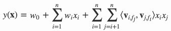
其中，\(f_j\) 是第 \(j\) 个特征所属的 \(field\) 。如果隐向量的长度为 \(k\) ，那么FFM的二次参数有 \(nfk\) 个，远多于FM模型的 \(nk\) 个。 此外，由于隐向量与 \(field\) 相关，FFM二次项并不能够化简，其预测复杂度是 \(O(kn^2)\) 。 所以ffm容易造成过拟合，尽量将k值取小一点，一般取3~5 。
下面以一个例子简单说明FFM的特征组合方式。输入记录如下
这条记录可以编码成5个特征，其中“Genre=Comedy”和“Genre=Drama”属于同一个field，“Price”是数值型，不用One-Hot编码转换。 为了方便说明FFM的样本格式，我们将所有的特征和对应的 \(field\) 映射成整数编号。
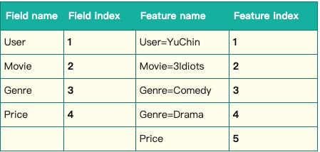
那么，FFM的组合特征有10项，如下图所示。
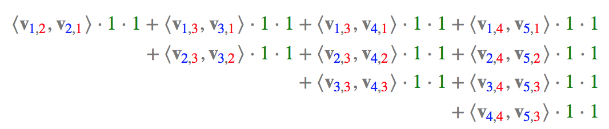
其中，红色是 \(field\) 编号，蓝色是特征编号，绿色是此样本的特征取值。二次项的系数是通过与特征 \(field\) 相关的隐向量点积得到的，二次项共有 \(\frac { n(n-1) }{ 2 }\) 个。
DeepFm¶
DeepFm的提出背景¶
CTR预估数据特点：
输入中包含类别型和连续型数据。类别型数据需要one-hot,连续型数据可以先离散化再one-hot，也可以直接保留原值
维度非常高
数据非常稀疏
特征按照Field分组
CTR预估重点在于学习组合特征。注意，组合特征包括二阶、三阶甚至更高阶的，阶数越高越复杂，越不容易学习。Google的论文研究得出结论： 高阶和低阶的组合特征都非常重要，同时学习到这两种组合特征的性能要比只考虑其中一种的性能要好 。
那么关键问题转化成： 如何高效的提取这些组合特征 。一种办法就是引入领域知识人工进行特征工程。这样做的弊端是高阶组合特征非常难提取， 会耗费极大的人力。而且，有些组合特征是隐藏在数据中的，即使是专家也不一定能提取出来，比如著名的“尿布与啤酒”问题。
线性模型的局限性：无法提取高阶的组合特征 ，比如 LR，FTRL
FM模型：仅仅从理论上解决了低阶和高阶组合特征提取的问题。但是实际应用中受限于计算复杂度，一般也就只考虑到2阶交叉特征。
- 其它的融合深度学习的模型：无论是FNN还是PNN，他们都有一个绕不过去的缺点：对于低阶的组合特征，学习到的比较少；
Google意识到了这个问题，为了同时学习低阶和高阶组合特征，提出了Wide&Deep模型。它混合了一个线性模型（Wide part）和Deep模型(Deep part)。 这两部分模型需要不同的输入，而Wide part部分的输入，依旧依赖人工特征工程。
DeepFM在Wide&Deep的基础上进行改进，成功解决了这两个问题，并做了一些改进，其优势/优点如下：
不需要预训练FM得到隐向量
不需要人工特征工程
能同时学习低阶和高阶的组合特征
FM模块和Deep模块共享Feature Embedding部分，可以更快的训练，以及更精确的训练学习
将DNN与FM进行一个合理的融合总的来说有两种形式，一是 串行结构 ，二是 并行结构 。
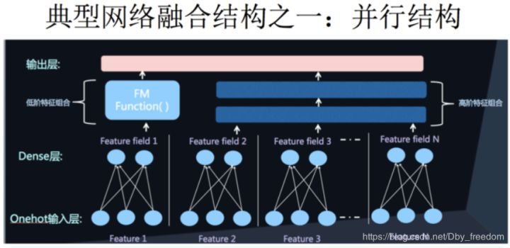 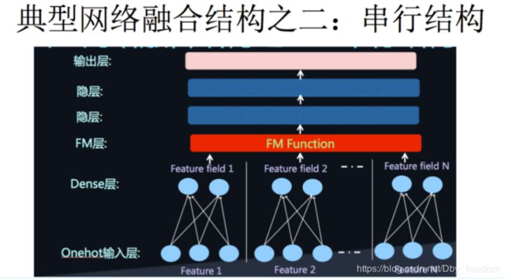
串行结构代表是FNN，DeepFM就是并行结构中的一种典型代表 。
DeepFm原理¶
首先给出论文模型图，由于文章画的很好，就直接贴图了：
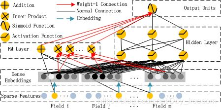
可以看到，整个模型大体分为两部分：FM和DNN。简单叙述一下模型的流程：借助FNN的思想，利用FM进行embedding， 之后的wide和deep模型共享embedding之后的结果。DNN的输入完全和FNN相同 （这里不用预训练，直接把embedding层看NN的一个隐含层），而通过一定方式组合后， 模型在wide上完全模拟出了FM的效果（后面会有推导过程），最后将DNN和FM的结果组合后激活输出。
DeepFM的预测结果可以写为 ：
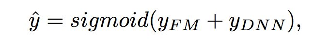
embedding和FM¶
模型在embedding的过程中，也是借助了FM的方式, 通过隐向量与X的内积运算，将稀疏的X向量转化为K维度的稠密向量， 即得到embedding向量数据，用于接下来DNN的输入以及FM的输出，回顾二阶FM的公式如下：

其中向量V就是对应特征的隐向量。而在目前很多的DNN模型中，都是借助了FM这种形式来做的embedding，具体推导如下：
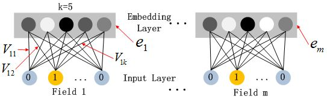
由于CTR的输入一般是稀疏的，因此在第一层隐含层之前，引入一个嵌入层来完成将输入向量压缩到低维稠密向量， 嵌入层(embedding layer)的结构如上图所示。当前网络结构有两个有趣的特性：
尽管不同field的输入长度不同，但是embedding之后向量的长度均为K
在FM里得到的隐变量Vik现在作为了嵌入层网络的权重，通过FM里面的二阶运算，将稀疏的X输入向量压缩为低纬度的稠密向量
这里的第二点如何理解呢，假设我们的k=5，首先，对于输入的一条记录，同一个field 只有一个位置是1，那么在由输入得到dense vector的过程中， 输入层只有一个神经元起作用，得到的dense vector其实就是输入层到embedding层该神经元相连的五条线的权重， 即vi1，vi2，vi3，vi4，vi5。这五个值组合起来就是我们在FM中所提到的Vi。在FM部分和DNN部分，这一块是共享权重的， 对同一个特征来说，得到的Vi是相同的。
具体栗子如下：
这里k表示隐向量的维数，Vij表示第i个特征embeding之后在隐向量的第j维。假设我已经给出了V矩阵，
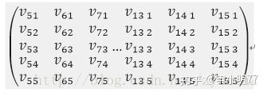
其中第5-15个特征是同一个field经过one-hot编码后的表示，这是隐向量按列排成矩阵，同时， 它也可看作embedding层的参数矩阵，按照神经网络前向传播的方式，embedding后的该slot下的向量值应该表示为：
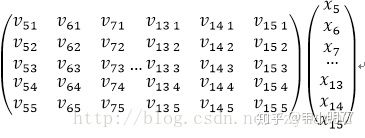
可以看到这个结果就是一个5维的向量，而这个普通的神经网络传递时怎么和FM联系到一起的，仔细观察这个式子可以发现，由于是离散化或者one-hot之后的X， 所以对于每一个field的特征而言，截断向量X都只有一个值为1，其他都为0。那么假设上述slot的V中，j为7的特征值为1，那么矩阵相乘之后的结果为：
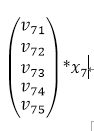
从结果中可以看到，实质上，每个slot在embedding后，其结果都是one-hot后有值的那一维特征所对应的隐向量，FNN也是同样如此。看到这里， 在来解释模型中FM部分是如何借助这种方式得到的。回到模型的示意图，可以看到在FM测，是对每两个embedding向量做内积，那么我们来看， 假设两个slot分别是第7和第20个特征值为1：
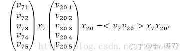
是不是感觉特别熟悉，没错，这个乘积的结果就是FM中二阶特征组合的其中一例，而对于所有非0组合（embedding向量组合）求和之后， 就是FM中所有二阶特征的部分，这就是模型中FM部分的由来。
当然，FM中的一阶特征，则直接在embedding之前对于特征进行组合即可。
模型当中的FM中涉及的参数同样会参与到梯度下降中，也就是说embedding层不会只是初始化使用，实质上这里可以理解为是直接用神经网络来做了embedding， 无疑他比FM本身的embedding能力来得更强。
DNN¶
DNN部分依然采用了全连接的深度神经网络的方式，只是在最后激活输出时，会对FM和DNN的结果一起做embedding
超参数建议：
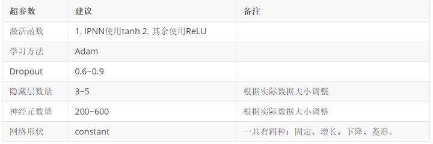PS: constant效果最好，就是隐藏层每一层的神经元的数量 相同 (神经元总个数的不变的情况下，平均到每一层效果最好)。
Wide&Deep¶
LR+DNN
Wide & Deep 模型的核心思想是结合 线性模型的记忆能力 和 DNN 模型的泛化能力 ，从而提升整体模型性能。
一、Motivation¶
推荐系统的主要挑战之一，是同时解决Memorization和Generalization，理解这两个概念是理解整个模型思路的关键，下面分别进行解释。
Memorization
面对拥有大规模离散sparse特征的CTR预估问题时，将特征进行非线性转换，然后再使用线性模型是在业界非常普遍的做法，最流行的即「LR+特征叉乘」。 Memorization 通过一系列人工的特征叉乘（cross-product）来构造这些非线性特征，捕捉sparse特征之间的高阶相关性，即“记忆” 历史数据中曾共同出现过的特征对。
例如，特征1——专业: {计算机、人文、其他}，特征2——下载过音乐《消愁》:{是、否}，这两个特征one-hot后的特征维度分别为3维与2维， 对应的叉乘结果是特征3——专业☓下载过音乐《消愁》:{计算机∧是，计算机∧否，人文∧是，人文∧否，其他∧是，其他∧否}。
典型代表是LR模型，使用大量的原始sparse特征和叉乘特征作为输入 ，很多原始的dense特征通常也会被分桶离散化构造为sparse特征。这种做法的优点是模型可解释高， 实现快速高效，特征重要度易于分析，在工业界已被证明是很有效的。Memorization的缺点是：
需要更多的人工设计；
可能出现过拟合。可以这样理解：如果将所有特征叉乘起来，那么几乎相当于纯粹记住每个训练样本，这个极端情况是最细粒度的叉乘，我们可以通过构造更粗粒度的特征叉乘来增强泛化性；
无法捕捉训练数据中未曾出现过的特征对。例如上面的例子中，如果每个专业的人都没有下载过《消愁》，那么这两个特征共同出现的频次是0，模型训练后的对应权重也将是0；
Generalization
Generalization 为sparse特征学习低维的dense embeddings 来捕获特征相关性，学习到的embeddings 本身带有一定的语义信息。可以联想到NLP中的词向量，不同词的词向量有相关性， 因此文中也称Generalization是基于相关性之间的传递。这类模型的代表是DNN和FM。
Generalization的优点是更少的人工参与，对历史上没有出现的特征组合有更好的泛化性 。但在推荐系统中，当user-item matrix非常稀疏时，例如有和独特爱好的users以及很小众的items， NN很难为users和items学习到有效的embedding。这种情况下，大部分user-item应该是没有关联的，但dense embedding 的方法还是可以得到对所有 user-item pair 的非零预测， 因此导致 over-generalize并推荐不怎么相关的物品。此时Memorization就展示了优势，它可以“记住”这些特殊的特征组合。
Memorization根据历史行为数据，产生的推荐通常和用户已有行为的物品直接相关的物品。而Generalization会学习新的特征组合，提高推荐物品的多样性。
Wide & Deep Learning，其中Wide & Deep分别对应Memorization & Generalization。
二、Model¶
模型结构
Wide & Deep模型结合了LR和DNN，其框架图如下所示。
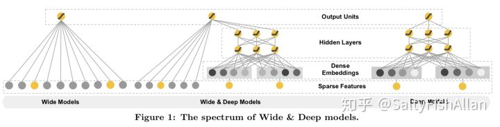Wide 该部分是广义线性模型，即:
\(y\quad =\quad { w }^{ T }\left[ x,\phi (x) \right] +b\) 其中 \(x\) 和 \(\phi (x)\) 表示 原始特征 与叉乘特征。
Deep 该部分是前馈神经网络，网络会对一些sparse特征（如ID类特征）学习一个低维的dense embeddings（维度量级通常在O(10)到O(100)之间）， 然后和一些原始dense特征一起作为网络的输入。每一层隐层计算：
()¶\[{ a }^{ l+1 }=f({ W }^{ l }{ a }^{ l }+{ b }^{ l })\]其中 \(a^l\) , \(b^l\) , \(W^l\) 是第 \(l\) 层的激活值、偏置和权重，\(f\) 是激活函数。
损失函数 模型选取logistic loss作为损失函数，此时Wide & Deep最后的预测输出为：
()¶\[p(y=1|x)\quad =\quad \sigma ({ w }_{ wide }^{ T }\left[ x,\phi (x) \right] +{ w }_{ deep }^{ T }{ a }^{ { l }_{ f } }+b)\]其中 \(\sigma\) 表示sigmoid函数， \(\phi({x})\) 表示叉乘特征， \({a}^{l_f}\) 表示NN最后一层激活值。
联合训练
联合训练（Joint Training）和集成（Ensemble）是不同的，集成是每个模型单独训练，再将模型的结果汇合。相比联合训练，集成的每个独立模型都得学得足够好才有利于随后的汇合，因此每个模型的model size也相对更大。 而联合训练的wide部分只需要作一小部分的特征叉乘来弥补deep部分的不足，不需要 一个full-size 的wide 模型。
Deep&Cross¶
Deep&Cross是Google 对 Wide & Deep工作的一个后续研究，文中提出 Deep & Cross Network，将Wide部分替换为由特殊网络结构实现的Cross， 自动构造有限高阶的交叉特征，并学习对应权重，告别了繁琐的人工叉乘。
Deep & Cross 由斯坦福与Google联合发表在AdKDD 2017上的论文《Deep & Cross Network for Ad Click Predictions》。
注解
AdKDD是SIGKDD在Computational Advertising领域的一个workshop，从2007年举办至今，发表了很多Ad领域的经典工作，例如2013年Facebook的GBDT+LR。 总体来说，这个workshop能够较好地反映这个行业的巨头们在Ad方向上的关注和研发重点，发表的工作实用性很强。
Motivation
Wide & Deep 的结构来同时实现Memorization与Generalization，但是在Wide部分，仍然需要人工地设计特征叉乘。 面对高维稀疏的特征空间、大量的可组合方式，基于人工先验知识虽然可以缓解一部分压力，但仍需要不小的人力和尝试成本， 并且很有可能遗漏一些重要的交叉特征。FM可以自动组合特征，但也仅限于二阶叉乘。能否告别人工组合特征， 并且自动学习高阶的特征组合呢？Deep & Cross 即是对此的一个尝试。
Model
Deep & Cross的网络结构如图
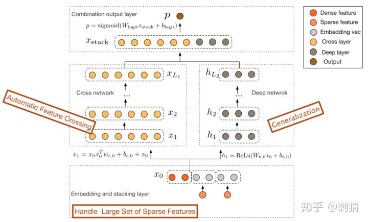
首先对原始特征做如下处理：
对sparse特征进行embedding，对于multi-hot的sparse特征，embedding之后再做一个简单的average pooling ；
对dense特征归一化，然后和embedding特征拼接，作为随后Cross层与Deep层的共同输入，即：
()¶\[{ x }_{ 0 }=[~ { x }_{ embed,1 }^{ T },~ { x }_{ embed,2 }^{ T },~ ...,~ { x }_{ embed,k }^{ T },~ { x }_{ dense }^{ T }]^{ T }\]
Cross Layer
Cross的目的是以一种显示、可控且高效的方式，自动构造有限高阶交叉特征。Cross结构如上图左侧所示，其中第 \(l+1\) 层输出为：
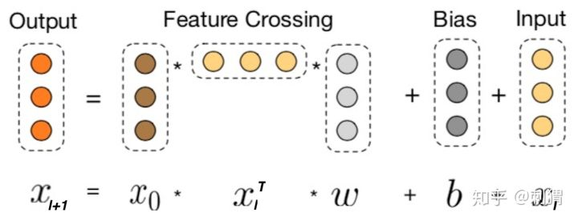- 即：
- ()¶\[{ x }_{ l+1 }={ x }_{ 0 }{ x }_{ l }^{ T }{ w }_{ l }+b+{ x }_{ l }=f({ x }_{ l },{ w }_{ l },{ b }_{ l })+{ x }_{ l },\quad 其中{ x }_{ l+1 }{ ;x }_{ l };{ x }_{ 0 }\in R\]
Cross Layer 设计的巧妙之处全部体现在上面的计算公式中，我们先看一些明显的细节：
每层的神经元个数都相同，都等于输入 \({x}_0\) 的维度 \(d\) ，也即每层的输入输出维度都是相等的；
受残差网络（Residual Network）结构启发，每层的函数 \(f\) 拟合的是 \({x}_{l+1}-{x}_l\) 的残差，
残差网络有很多优点，其中一点是处理梯度消失的问题，使网络可以“更深”.
举个栗子说明上述公式干了什么：
假设Cross有 \(2\) 层，\({ x }_{ 0 }=\begin{bmatrix} { x }_{ 0,1 } \\ { x }_{ 0,2 } \end{bmatrix}\) ,为了方便讨论不考虑 偏置项，即设定偏置项 \(b_i=0\), 则：
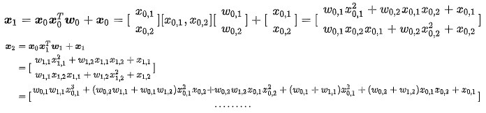最后得到 \(y_{cross}={x}_2^T*{w}_{cross} \in \mathbb{R}\) 参与到最后的 loss计算。
可以看到 \({x}_1\) 包含了原始特征 \(x_{0,1},x_{0,2}\) 从一阶到二阶的所有可能叉乘组合， 而 \({x}_2\) 包含了其从一阶到三阶的所有可能叉乘组合。现在知道cross layer的厉(niu)害(x)之处了吧,总结下Cross的设计：
有限高阶：叉乘阶数由网络深度决定，深度 \(L_c\) 对应最高 \(L_c+1\) 阶的叉乘
自动叉乘：Cross输出包含了原始特征从一阶（即本身）到 \(L_c+1\) 阶的所有叉乘组合，而模型参数量仅仅随输入维度成线性增长： \(2*d*L_c\)
参数共享：不同叉乘项对应的权重不同，但并非每个叉乘组合对应独立的权重（指数数量级）， 通过参数共享，Cross有效降低了参数量。此外，参数共享还使得模型有更强的泛化性和鲁棒性。例如，如果独立训练权重，当训练集中 \(x_i \ne 0\wedge x_j \ne0\) 这个叉乘特征没有出现 ，对应权重肯定是零，而参数共享则不会，类似地，数据集中的一些噪声可以由大部分正常样本来纠正权重参数的学习
联合训练
模型的Deep 部分如图1右侧部分所示，DCN拼接Cross 和Deep的输出，采用logistic loss作为损失函数，进行联合训练，这些细节与Wide & Deep几乎是一致的， 在这里不再展开论述。另外，原论文中也在目标函数中加入L2正则防止过拟合。
参数分析
设初始输入 \({x}_0\) 维度为 \(d\) ，Deep和Cross层数分别为 \(L_{cross}\) 和 \(L_{deep}\) ，为便于分析，设Deep每层神经元个数为 \(m\) ，则两部分的参数量为：
()¶\[Cross: d*L_{cross}*2 ~~~VS~~~ Deep: (d*m+m)+(m^2+m)*(L_{deep}-1)\]可以看到Cross的参数量随 d 增大仅呈“线性增长”！相比于Deep部分，对整体模型的复杂度影响不大，这得益于Cross的特殊网络设计， 对于模型在业界落地并实际上线来说，这是一个相当诱人的特点。
注解
这里有一点很值得留意，前面介绍过，将dense特征和embedding特征拼接后作为Cross层和Deep层的共同输入。 这对于Deep层是合理的，但我们知道人工交叉特征基本是对原始sparse特征进行叉乘，那为何不直接用原始sparse特征作为Cross的输入呢？ 联系这里介绍的Cross设计，每层layer的节点数都与Cross的输入维度一致的，直接使用大规模高维的sparse特征作为输入， 会导致极大地增加Cross的参数量。当然其实直接拿原始sparse特征喂给Cross层，才是真正“省去人工叉乘”的更完美实现， 但是现实条件不太允许。所以将高维sparse特征转化为低维的embedding，再喂给Cross，实则是一种trade-off的可行选择。
论文提出一种新型的交叉网络结构 DCN，其中 Cross 可以显示、自动地构造有限高阶的特征叉乘，从而在一定程度上告别人工特征叉乘
Cross部分的复杂度与输入维度呈线性关系，相比DNN非常节约内存。
阿里DIN¶
Deep Interest Network(DIN) 针对电子商务领域(e-commerce industry)的CTR预估， 重点在于充分利用/挖掘用户历史行为数据中的信息。
注解
互联网电子商务领域，数据特点：Diversity、Local Activation
- Diversity:
用户在访问电商网站时会对多种商品都感兴趣。也就是用户的兴趣非常的广泛。
- Local Activation：
用户是否会点击推荐给他的商品，仅仅取决于历史行为数据中的一小部分，而不是全部。
- ep:

Diversity：一个年轻的母亲，从他的历史行为中，我们可以看到她的兴趣非常广泛：羊毛衫、手提袋、耳环、童装、运动装等等。
Local Activation：一个爱游泳的人，他之前购买过travel book、ice cream、potato chips、swimming cap。 当前给他推荐的商品(或者说是广告Ad)是goggle(护目镜)。那么他是否会点击这次广告， 跟他之前是否购买过薯片、书籍、冰激凌一丁点关系也没有！而是与他之前购买过游泳帽有关系。 也就是说在这一次CTR预估中，部分历史数据(swimming cap)起了决定作用，而其他的基本都没啥用。
DIN 给出解决方案：
使用用户兴趣分布来表示用户多种多样的兴趣爱好；
使用Attention机制来实现Local Activation；
针对模型训练，提出了Dice激活函数，自适应正则，显著提升了模型性能与收敛速度。
DIN同时对Diversity和Local Activation进行建模
- 针对Diversity：
针对用户广泛的兴趣，DIN用an interest distribution去表示。
- 针对Local Activation：
DIN借鉴机器翻译中的Attention机制，设计了一种attention-like network structure， 针对当前候选Ad，去局部的激活(Local Activate)相关的历史兴趣信息。和当前候选Ad相关性越高的历史行为， 会获得更高的attention score，从而会主导这一次预测。
- 当DNN深度比较深(参数非常多)，输入又非常稀疏的时候，很容易过拟合。DIN提出Adaptive regularizaion来
防止过拟合，效果显著。
DIN方法也可以应用于其他有丰富用户行为数据的场景，比如：
电子商务中的个性化推荐
社交网络中的信息推流排序(feeds ranking)
系统概览¶

阿里推荐系统工作流程就像上图所示：
检查用户历史行为数据
使用matching module产生候选ads
通过ranking module得到候选ads的点击概率，并根据概率排序得到推荐列表
记录下用户在当前展示广告下的反应(点击与否)
这是一个闭环的系统，对于用户行为数据(User Behavior Data)，系统自己生产并消费。
训练数据¶
前面提到，电子商务领域，充分利用User Behavior Data非常关键，而它又有着非常显著的特点：
Diversity. 兴趣爱好非常广泛
Local Activation. 历史行为中部分数据主导是否会点击候选广告
还有的特点，就是CTR中输入普遍存在的特点：
高纬度
非常稀疏
CTR中一旦涉及到用户行为数据，还有一个特点：
特征往往都是multi-hot的稀疏ids。
也就是：多值离散特征。在电子商务上的例子就是：用户购买过的good_id有多个，购买过的shop_id也有多个， 而这也直接导致了每个用户的历史行为id长度是不同的。
为了得到一个固定长度的Embedding Vector表示，一般的做法是在Embedding Layer后面增加一个Pooling Layer。 Pooling可以用sum或average。最终得到一个固定长度的Embedding Vector，是用户兴趣的一个抽象表示， 缺点是会损失一些信息。
DIN使用Attention机制来解决这个问题。Attention机制来源于Neural Machine Translation(NMT)。 DIN使用Attention机制去更好的建模局部激活。 也就是说：在Embedding Layer -> Pooling Layer得到用户兴趣表示的时候，赋予不同的历史行为不同的权重，实现局部激活。 从最终反向训练的角度来看，就是根据当前的候选广告，来反向的激活用户历史的兴趣爱好，赋予不同历史行为不同的权重。
特征设计¶
论文中作者把特征分为四大类，并没有进行特征组合/交叉特征。而是通过DNN去学习特征间的交互信息。特征如下：

可以看到特征主要包括：用户特征、用户行为特征、广告特征、上下文特征。 其中，只有用户行为特征中会出现multi-hot 原因就是一个用户会购买多个good_id,也会访问多个shop_id，另一个表现就是这样导致了每个用户的样本长度都是不同的.
评价指标¶
模型使用的评价指标是GAUC，我们先来看一下GAUC的计算公式：

我们首先要肯定的是，AUC是要分用户看的，我们的模型的预测结果，只要能够保证对每个用户来说，他想要的结果排在前面就好了。
假设有两个用户A和B，每个用户都有10个商品，10个商品中有5个是正样本，我们分别用TA，TB，FA，FB来表示两个用户的正样本和负样本。 也就是说，20个商品中有10个是正样本。假设模型预测的结果大小排序依次为TA，FA，TB，FB。如果把两个用户的结果混起来看， AUC并不是很高，因为有5个正样本排在了后面，但是分开看的话，每个用户的正样本都排在了负样本之前，AUC应该是1。 显然，分开看更容易体现模型的效果，这样消除了用户本身的差异。
但是上文中所说的差异是在用户点击数即样本数相同的情况下说的。还有一种差异是用户的展示次数或者点击数，如果一个用户有1个正样本， 10个负样本，另一个用户有5个正样本，50个负样本，这种差异同样需要消除。那么GAUC的计算，不仅将每个用户的AUC分开计算， 同时根据用户的展示数或者点击数来对每个用户的AUC进行加权处理。进一步消除了用户偏差对模型的影响。通过实验证明， GAUC确实是一个更加合理的评价指标。
模型原理¶
base模型

DIN

Base Model有一个很大的问题，它对用户的历史行为是同等对待的，没有做任何处理，这显然是不合理的。 一个很显然的例子，离现在越近的行为，越能反映你当前的兴趣。因此，对用户历史行为基于Attention机制进行一个加权
Attention机制简单的理解就是，针对不同的广告，用户历史行为与该广告的权重是不同的。假设用户有ABC三个历史行为，对于广告D， 那么ABC的权重可能是0.8、0.1、0.1；对于广告E，那么ABC的权重可能是0.3、0.6、0.1。这里的权重， 就是Attention机制即上图中的Activation Unit所需要学习的。
在加入Activation Unit之后，用户的兴趣表示计算如下：

其中， \({V}_{i}\) 表示 \(behavior id i\) 的嵌入向量，比如good_id,shop_id等。 \({V}_{u}\) 是候选广告的嵌入向量； \({w}_{i}\) 是候选广告影响着每个 \(behavior id\) 的权重， 也就是Local Activation。 \({w}_{i}\) 通过Activation Unit计算得出，这一块用函数去拟合，表示为 \(g({V}_{i}, {V}_{a})\) 。
Activation Unit 代码实现
这里的输入有三个，候选广告queries，用户历史行为keys，以及Batch中每个行为的长度。 这里为什么要输入一个keys_length呢，因为每个用户发生过的历史行为是不一样多的， 但是输入的keys维度是固定的(都是历史行为最大的长度)，因此我们需要这个长度来计算一个mask， 告诉模型哪些行为是没用的，哪些是用来计算用户兴趣分布的。
经过以下几个步骤得到用户的兴趣分布：
将queries变为和keys同样的形状B * T * H(B指batch的大小，T指用户历史行为的最大长度，H指embedding的长度)
通过三层神经网络得到queries和keys中每个key的权重，并经过softmax进行标准化
通过weighted sum得到最终用户的历史行为分布
def attention(queries,keys,keys_length):
'''
queries: [B, H]
keys: [B, T, H]
keys_length: [B]
'''
queries_hidden_units = queries.get_shape().as_list()[-1]
queries = tf.tile(queries,[1,tf.shape(keys)[1]])
queries = tf.reshape(queries,[-1,tf.shape(keys)[1],queries_hidden_units])
din_all = tf.concat([queries,keys,queries-keys,queries * keys],axis=-1) # B*T*4H
# 三层全链接
d_layer_1_all = tf.layers.dense(din_all, 80, activation=tf.nn.sigmoid, name='f1_att')
d_layer_2_all = tf.layers.dense(d_layer_1_all, 40, activation=tf.nn.sigmoid, name='f2_att')
d_layer_3_all = tf.layers.dense(d_layer_2_all, 1, activation=None, name='f3_att') #B*T*1
outputs = tf.reshape(d_layer_3_all,[-1,1,tf.shape(keys)[1]]) #B*1*T
# Mask
key_masks = tf.sequence_mask(keys_length,tf.shape(keys)[1])
key_masks = tf.expand_dims(key_masks,1) # B*1*T
paddings = tf.ones_like(outputs) * (-2 ** 32 + 1) # 在补足的地方附上一个很小的值，而不是0
outputs = tf.where(key_masks,outputs,paddings) # B * 1 * T
# Scale
outputs = outputs / (keys.get_shape().as_list()[-1] ** 0.5)
# Activation
outputs = tf.nn.softmax(outputs) # B * 1 * T
# Weighted Sum
outputs = tf.matmul(outputs,keys) # B * 1 * H 三维矩阵相乘，相乘发生在后两维，即 B * (( 1 * T ) * ( T * H ))
return outputs